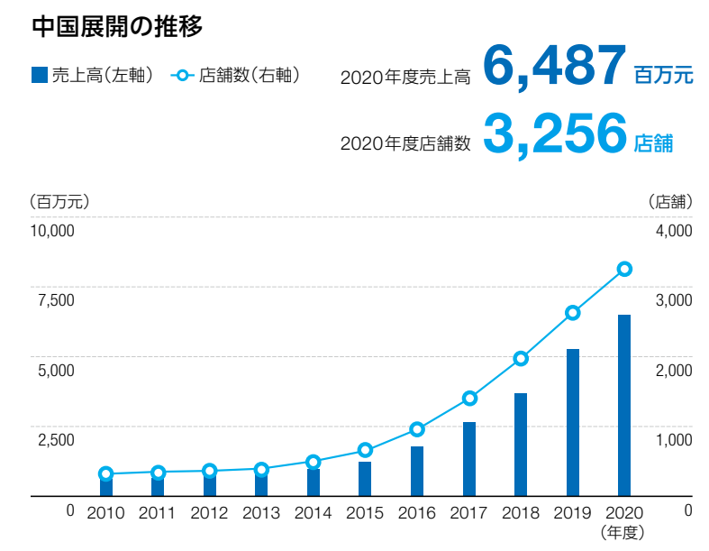
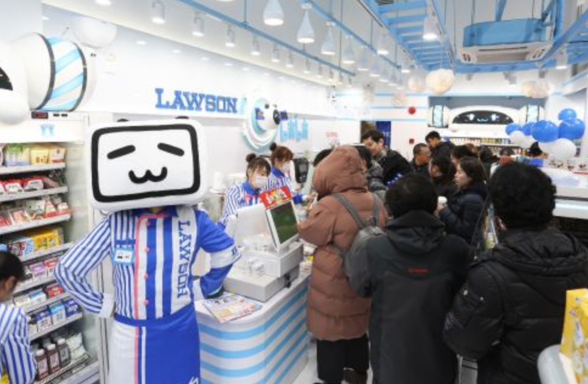
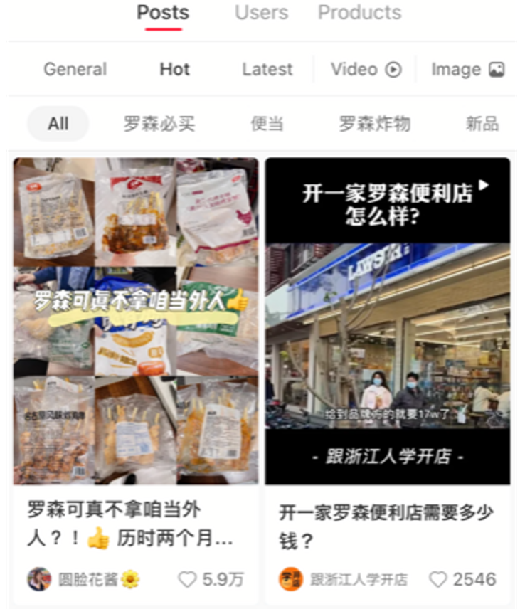

「私たちは"みんなと暮らすマチ"を幸せにします。」
ローソングループが掲げる企業理念をもとに、「マチの"ほっと"ステーション。」になるべく、
日本のみならず中国を始めとした海外で事業を展開して来ました。
一方で、、、
"もっと日本の良いモノを紹介出来ないか"、"日本と中国の架け橋になれないか"
こんな想いから始まったプロジェクトが、Lawson-β🥛、です。
COVID-19が発生して以降、中国のEC市場は更に拡大しており、越境ECも更なる成長が見込まれます。
中国の小売総額は約680兆円(2018年)で米国とほぼ同じ程度の規模、日本の約4倍です。
その中で、EC市場は約170兆円、米国の約2倍、日本の約14倍の規模となり、更に年率20%程度で成長しています。
越境EC市場も年々成長しており、2022年には約5兆円を越す規模となり、少しのシェアで多くの売上を獲得出来る可能性があります。
出典元:経済産業省「平成30年度我が国におけるデータ駆動型社会に係る基盤整備（電子商取引に関する市場調査）」
一方、越境ECには少なからず課題がある事も事実です。
中国のEC市場は今後も成長が見込まれる有望な市場である事に疑いは無く、多くの日本企業が中国のEC市場に参入したい意向があります。
また、中国の消費者の日本の商品に対する信頼や期待の高さは未だに高く、物理的距離の近さもあり、魅力的な市場である事に疑いは無いと思います。
一方で、中国市場でECを展開する際には多くの課題があり、その中でも特に下の３つが直面する大きな課題として挙げられます。
中国の規制は変化が激しい為、柔軟な対応が求められます。例えば、輸出入の為の関税制度、インターネット規制などが挙げられます。変化に柔軟に、かつ、タイムリーに対応する為には、中国でのビジネス経験・知見・ネットワークが求められます。
折角良い商品を武器に中国市場へ参入出来たとしても、お客様の認知度が無いと購買に繋がりません。認知度を高めるには相応のコストと時間が必要となりますが、既に中国市場に参入済みのブランドを“フック”にして販売する事も１つの選択肢と思います。
プロモーションにはコストが掛かります。また、ECを始めとしたオンラインのみでのプロモーションではお客様の目に触れる機会も多くないと考えます。オンライン＋オフラインでの連動したプロモーションが最も効果的では無いかと考えます。
ローソンは日系コンビニとしていち早く中国市場に進出し（1996年）、中国各地に4,300を超える店舗を出店しております（2021年12月末時点）。
これまで培ってきた知見・リアル店舗網を駆使して、中国進出をサポートします。
商品の湯輸入・通関業務、越境ECプラットフォームでの販売、プロモーションなど全てを当社に一括でお任せ下さい。
ローソンのオフライン店舗も活用する事で、オンラインだけに頼らない双方向のプロモーションを実現します。
プロモーションの企画・実行は、当社のパートナーでもあり中国で多くの日系企業のデジタルコミュニケーションで支援実績のあるYoren社と協力します。
Lawson-β🥛だから提供出来る価値は次の通りです。
1996年に日系コンビニエンスストアとして初めて上海に進出。当初は市場環境・競争激化などから店舗数が伸び悩んでいたものの、2010年より徐々に拡大、2021年末現在は4,000店舗を突破。
4,000店舗超の店舗網は日系コンビニではトップシェアを誇ります。また例えば中国人気動画サイトのビリビリを始めとしたコラボ店舗も多く出店しております。
店舗数が増えるにつれて、認知度も上がってきており、例えば若い層に人気の小紅書（RED BOOK、動画投稿+ECのアプリ）でも数多く商品が紹介されています。
